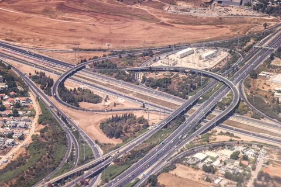
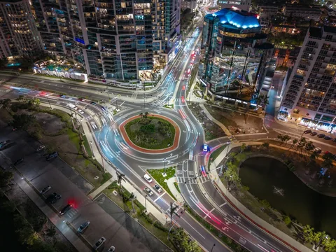

Aerial photograph of a multi-level highway interchange.
Photograph by Haim Charbit.
Used under the Unsplash License. Illustrative reference photograph.
corridor.webp · corridor-480.webp
Image sources & attribution
Real transportation photographs bring context to this portfolio. Thank you to the photographers who make their work available through Unsplash.
Illustrative imagery. These photographs show transportation topics and are not photographs of my own project sites, clients, or completed engineering work. Photographer credit does not imply endorsement.

Photograph by Haim Charbit.
Used under the Unsplash License. Illustrative reference photograph.
corridor.webp · corridor-480.webp

Photograph by Tyler Casey.
Used under the Unsplash License. Illustrative reference photograph.
intersection.webp · intersection-480.webp
Photograph by David Syphers.
Used under the Unsplash License. Illustrative reference photograph.
airport.webp · airport-480.webp

Photograph by Nicolas Savignat.
Used under the Unsplash License. Illustrative reference photograph.
street.webp · street-480.webp

Photograph by Joseph Corl.
Used under the Unsplash License. Illustrative reference photograph.
roundabout.webp · roundabout-480.webp